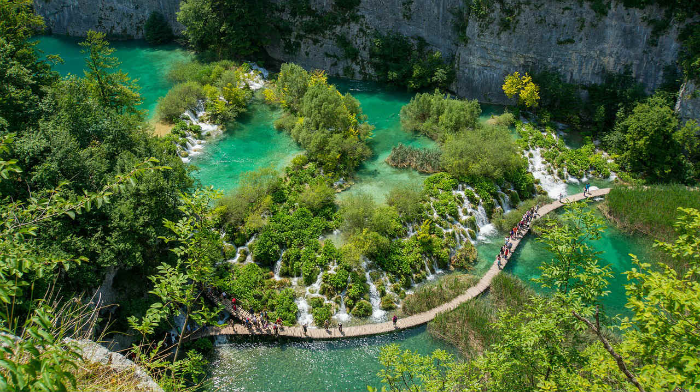
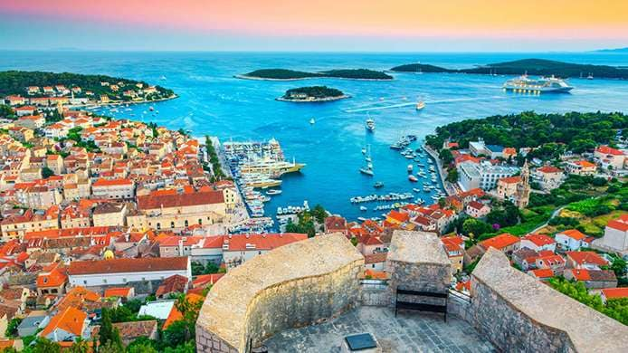

Origen da Croácia
A ocupação da área que pertence hoje ao território croata é muito antiga, exercendo desde o início de
seu povoamento o papel de conexão entre duas regiões distintas do continente europeu, isto é, meridional
e central. A Croácia passou por uma série de domínios estrangeiros, fato que se deveu sobretudo à sua
posição estratégica. O mais duradouro deles foi o domínio húngaro, que se estabeleceu naquela região no
ano de 1091 e antecedeu o Império Austro-Húngaro até o início da Primeira Guerra Mundial no ano de 1918.
Nesse período, a Croácia passou a fazer parte do Reino dos Sérvios, Croatas e Eslovênios, que se
unificou dando origem à Iugoslávia e que se tornou, ao final da Segunda Guerra Mundial, uma república de
regime socialista. O desmembramento do território iugoslavo decorreu da morte do seu então líder, Josip
Broz Tito, e com o eventual fim do regime comunista no leste da Europa em 1989.
Culturas
A Croácia possui uma cultura muito rica e que foi constituída no curso de séculos de história.
Atualmente, a etnia predominante no país é a croata, que forma 90% da sua população e caracteriza assim
os costumes e expressões culturais predominantes. No entanto, há ainda muitos representantes das
culturas sérvia, bósnia, eslovaca, checa e também romani.
Dentre os idiomas falados no país, destacam-se o croata, língua oficial expressa por 95,6% dos seus
moradores, o sérvio e outros idiomas de países pertencentes principalmente ao Leste Europeu. A religião
católica é praticada pela grande maioria dos croatas, mas há também seguidores das fés cristã ortodoxa e
islâmica, não havendo dados disponíveis a respeito de outras crenças.
Dados gerais
Nome oficial: República da Croácia.
Gentílico: croata.
Extensão territorial: 56.594 km² (ONU, 2020).
Localização: sul da Europa.
Capital: Zagreb.
Clima: temperado continental.
Governo: república parlamentarista.
Divisão administrativa: 20 condados e 1 município (Zagrebe).
Idioma: croata.
População: 4.105.000 habitantes (ONU, 2020).
"Moeda: kuna (HRK).
Produto Interno Bruto (PIB): US$ 65,22 bilhões (FMI, 2021).
PIB per capita: US$ 16.220 (FMI, 2020)
Governo da Croácia
A Croácia possui um governo republicano parlamentarista, por meio do qual o presidente exerce o papel de
chefe de Estado e o primeiro-ministro tem a função de chefe de governo. A sede do governo croata fica
localizada na cidade de Zagreb.
"A Croácia é um país urbanizado, mas que possui uma ampla porcentagem de sua população vivendo na zona
rural. É, além disso, uma nação que apresenta boa renda e serviços que refletem no seu Índice de
Desenvolvimento Humano (IDH) elevado, com valor de 0,851."
Pontos turisticos
1. Parque Nacional Plitvice
O Parque Nacionai dos Lagos Plitvice está localizado bem no meio do país. É no caminho para Zagreb, um pouco longe das praias da Croácia, mas vale a visita. É possível contratar uma excursão guiada aos lagos Plitvice saindo de Split.
2. Ilha de Hvar
A ilha de Hvar é sem dúvida um dos principais pontos de interesse da Croácia. Além de seus lindos campos de lavanda, Hvar possui praias lindíssimas que abrigam baladas e beach clubs à beira-mar, além de resorts.